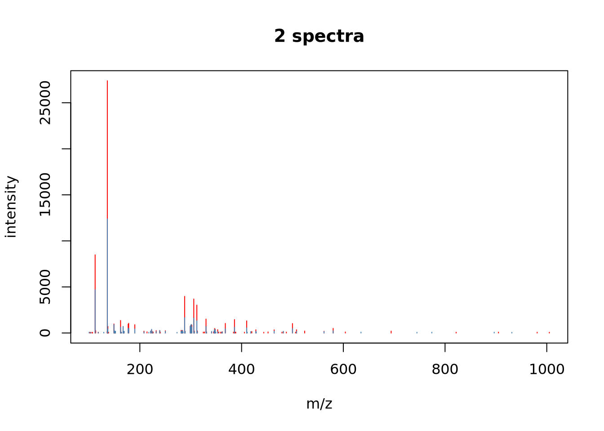
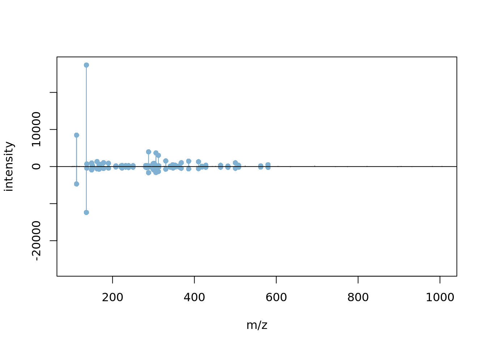

Chapter 3 Raw MS data
In this section, we will learn how to read raw data in one of the
commonly used open formats (mzML, mzXML, netCDF or mgf) into
R.
3.1 What is raw data in R
When we manipulate complex data, we need a way to abstract it.
The abstraction saves us from having to know about all the details of that data and its associated metadata. In R, we think of MS data as illustrated on the figure below (taken from (Gatto, Gibb, and Rainer 2020Gatto, Laurent, Sebastian Gibb, and Johannes Rainer. 2020. “MSnbase, Efficient and Elegant R-Based Processing and Visualisation of Raw Mass Spectrometry Data.” J. Proteome Res., September.)): a metadata table and a set of raw spectra. This allows to rely on a few easy-to-remember conventions to make mundane and repetitive tasks trivial and be able to complete more complex things easily. Abstractions provide a smoother approach to handle complex data using common patterns.
Figure 3.1: Schematic representation of what is referred to by raw data: a collection of mass spectra and a table containing spectrum-level annotations along the lines. Raw data are imported from one of the many community-maintained open standards formats (mzML, mzXML, mzData or ANDI-MS/netCDF).

3.1.1 The Spectra class
We are going to use the
Spectra package
as an abstraction to raw mass spectrometry data.
library(Spectra)Spectra is part of the R for Mass Spectrometry
initiative. It
defines the Spectra class that is used as a raw data abstraction, to
manipulate MS data and metadata. The best way to learn about a data
structure is to create one by hand.
Let’s create a DataFrame4 As defined in the Bioconductor S4Vectors
package. containing MS levels, retention time, m/z and intensities
for 2 spectra:
spd <- DataFrame(msLevel = c(1L, 2L), rtime = c(1.1, 1.2))
spd$mz <- list(c(100, 103.2, 104.3, 106.5), c(45.6, 120.4, 190.2))
spd$intensity <- list(c(200, 400, 34.2, 17), c(12.3, 15.2, 6.8))
spd## DataFrame with 2 rows and 4 columns
## msLevel rtime mz intensity
## <integer> <numeric> <list> <list>
## 1 1 1.1 100.0,103.2,104.3,... 200.0,400.0, 34.2,...
## 2 2 1.2 45.6,120.4,190.2 12.3,15.2, 6.8And now convert this DataFrame into a Spectra object:
sp0 <- Spectra(spd)
sp0## MSn data (Spectra) with 2 spectra in a MsBackendMemory backend:
## msLevel rtime scanIndex
## <integer> <numeric> <integer>
## 1 1 1.1 NA
## 2 2 1.2 NA
## ... 16 more variables/columns.Exercise
Explore the newly created object using
-
spectraVariablesto extract all the metadata variables. -
spectraDatato extract all the metadata. -
peaksDatato extract a list containing the raw data. -
[to create subsets.
3.1.2 Spectra from mzML files
Let’s now create a new object using the mzML data previously
downloaded and available in the mzf file.
mzf## [1] "/home/lgatto/.cache/R/rpx/53fd9a5bb5f5_TMT_Erwinia_1uLSike_Top10HCD_isol2_45stepped_60min_01-20141210.mzML"sp <- Spectra(mzf)
sp## MSn data (Spectra) with 7534 spectra in a MsBackendMzR backend:
## msLevel rtime scanIndex
## <integer> <numeric> <integer>
## 1 1 0.4584 1
## 2 1 0.9725 2
## 3 1 1.8524 3
## 4 1 2.7424 4
## 5 1 3.6124 5
## ... ... ... ...
## 7530 2 3600.47 7530
## 7531 2 3600.83 7531
## 7532 2 3601.18 7532
## 7533 2 3601.57 7533
## 7534 2 3601.98 7534
## ... 33 more variables/columns.
##
## file(s):
## 53fd9a5bb5f5_TMT_Erwinia_1uLSike_Top10HCD_isol2_45stepped_60min_01-20141210.mzMLExercise
- Repeat the data manipulations above.
- Check the number of scans in the object with
length(). - Note the difference in the first line when showing the object in the console. We will get back to this idea of backend later.
Mass spectrometry data in Spectra objects can be thought of as a
list of individual spectra, with each spectrum having a set of
variables associated with it. Besides core spectra variables (such
as MS level or retention time) an arbitrary number of optional
variables can be assigned to a spectrum. The core spectra variables
all have their own accessor method and it is guaranteed that a value
is returned by it (or NA if the information is not available). The
core variables and their data type are (alphabetically ordered):
-
acquisitionNum
integer(1): the index of acquisition of a spectrum during a MS run. -
centroided
logical(1): whether the spectrum is in profile or centroid mode. -
collisionEnergy
numeric(1): collision energy used to create an MSn spectrum. -
dataOrigin
character(1): the origin of the spectrum’s data, e.g. the mzML file from which it was read. -
dataStorage
character(1): the (current) storage location of the spectrum data. This value depends on the backend used to handle and provide the data. For an in-memory backend like theMsBackendDataFramethis will be"<memory>", for an on-disk backend such as theMsBackendHdf5Peaksit will be the name of the HDF5 file where the spectrum’s peak data is stored. -
intensity
numeric: intensity values for the spectrum’s peaks. -
isolationWindowLowerMz
numeric(1): lower m/z for the isolation window in which the (MSn) spectrum was measured. -
isolationWindowTargetMz
numeric(1): the target m/z for the isolation window in which the (MSn) spectrum was measured. -
isolationWindowUpperMz
numeric(1): upper m/z for the isolation window in which the (MSn) spectrum was measured. -
msLevel
integer(1): the MS level of the spectrum. -
mz
numeric: the m/z values for the spectrum’s peaks. -
polarity
integer(1): the polarity of the spectrum (0and1representing negative and positive polarity, respectively). -
precScanNum
integer(1): the scan (acquisition) number of the precursor for an MSn spectrum. -
precursorCharge
integer(1): the charge of the precursor of an MSn spectrum. -
precursorIntensity
numeric(1): the intensity of the precursor of an MSn spectrum. -
precursorMz
numeric(1): the m/z of the precursor of an MSn spectrum. -
rtime
numeric(1): the retention time of a spectrum. -
scanIndex
integer(1): the index of a spectrum within a (raw) file. -
smoothed
logical(1): whether the spectrum was smoothed.
For details on the individual variables and their getter/setter
function see the help for Spectra (?Spectra). Also note that these
variables are suggested, but not required to characterize a
spectrum. Also, some only make sense for MSn, but not for MS1 spectra.
Exercise
- Extract a set of spectra variables using the accessor (for example
msLevel(.)) or using the$notation (for example.$msLevel). - How many MS level are there, and how many scans of each level?
- Extract the index of the MS2 spectrum with the highest base peak intensity.
- Are the data centroided or in profile mode?
- Pick a spectrum of each level and visually check whether it is
centroided or in profile mode. You can use the
plotSpectra()function to visualise peaks and set the m/z range with thexlimarguments.
Exercise
Using the first raw data file starting with MS3TMT10, answer the
following questions:
- How many spectra are there in that file?
- How many MS levels, and how many spectra per MS level?
- What is the index of the MS2 spectrum with the highest precursor intensity?
- Plot one spectrum of each level. Are they centroided or in profile mode?
These objects and their manipulations are not limited to single files:
(fls <- dir(system.file("sciex", package = "msdata"), full.names = TRUE))## [1] "/home/lgatto/R/x86_64-pc-linux-gnu-library/4.3/msdata/sciex/20171016_POOL_POS_1_105-134.mzML"
## [2] "/home/lgatto/R/x86_64-pc-linux-gnu-library/4.3/msdata/sciex/20171016_POOL_POS_3_105-134.mzML"sp_sciex <- Spectra(fls)
table(dataOrigin(sp_sciex))##
## /home/lgatto/R/x86_64-pc-linux-gnu-library/4.3/msdata/sciex/20171016_POOL_POS_1_105-134.mzML
## 931
## /home/lgatto/R/x86_64-pc-linux-gnu-library/4.3/msdata/sciex/20171016_POOL_POS_3_105-134.mzML
## 9313.1.3 Backends
Backends allow to use different backends to store mass spectrometry data while
providing via the Spectra class a unified interface to use that data. The
Spectra package defines a set of example backends but any object extending the
base MsBackend class could be used instead. The default backends are:
-
MsBackendMzR: this backend keeps only general spectra variables in memory and relies on the mzR package to read mass peaks (m/z and intensity values) from the original MS files on-demand.
sp_sciex## MSn data (Spectra) with 1862 spectra in a MsBackendMzR backend:
## msLevel rtime scanIndex
## <integer> <numeric> <integer>
## 1 1 0.280 1
## 2 1 0.559 2
## 3 1 0.838 3
## 4 1 1.117 4
## 5 1 1.396 5
## ... ... ... ...
## 1858 1 258.636 927
## 1859 1 258.915 928
## 1860 1 259.194 929
## 1861 1 259.473 930
## 1862 1 259.752 931
## ... 33 more variables/columns.
##
## file(s):
## 20171016_POOL_POS_1_105-134.mzML
## 20171016_POOL_POS_3_105-134.mzML-
MsBackendDataFrame: the mass spectrometry data is stored (in-memory) in aDataFrame. Keeping the data in memory guarantees high performance but has also, depending on the number of mass peaks in each spectrum, a much higher memory footprint.
setBackend(sp_sciex, MsBackendDataFrame())## MSn data (Spectra) with 1862 spectra in a MsBackendDataFrame backend:
## msLevel rtime scanIndex
## <integer> <numeric> <integer>
## 1 1 0.280 1
## 2 1 0.559 2
## 3 1 0.838 3
## 4 1 1.117 4
## 5 1 1.396 5
## ... ... ... ...
## 1858 1 258.636 927
## 1859 1 258.915 928
## 1860 1 259.194 929
## 1861 1 259.473 930
## 1862 1 259.752 931
## ... 33 more variables/columns.
## Processing:
## Switch backend from MsBackendMzR to MsBackendDataFrame [Thu Jun 1 23:27:53 2023]-
MsBackendHdf5Peaks: similar toMsBackendMzRthis backend reads peak data only on-demand from disk while all other spectra variables are kept in memory. The peak data are stored in Hdf5 files which guarantees scalability.
sp_hdf5 <- setBackend(sp_sciex, MsBackendHdf5Peaks(), hdf5path = tempdir())
sp_hdf5## MSn data (Spectra) with 1862 spectra in a MsBackendHdf5Peaks backend:
## msLevel rtime scanIndex
## <integer> <numeric> <integer>
## 1 1 0.280 1
## 2 1 0.559 2
## 3 1 0.838 3
## 4 1 1.117 4
## 5 1 1.396 5
## ... ... ... ...
## 1858 1 258.636 927
## 1859 1 258.915 928
## 1860 1 259.194 929
## 1861 1 259.473 930
## 1862 1 259.752 931
## ... 33 more variables/columns.
##
## file(s):
## 20171016_POOL_POS_1_105-134.h5
## 20171016_POOL_POS_3_105-134.h5
## Processing:
## Switch backend from MsBackendMzR to MsBackendHdf5Peaks [Thu Jun 1 23:28:02 2023]table(sp_hdf5$dataOrigin)##
## /home/lgatto/R/x86_64-pc-linux-gnu-library/4.3/msdata/sciex/20171016_POOL_POS_1_105-134.mzML
## 931
## /home/lgatto/R/x86_64-pc-linux-gnu-library/4.3/msdata/sciex/20171016_POOL_POS_3_105-134.mzML
## 931table(sp_hdf5$dataStorage)##
## /tmp/Rtmpgbyk77/20171016_POOL_POS_1_105-134.h5
## 931
## /tmp/Rtmpgbyk77/20171016_POOL_POS_3_105-134.h5
## 931All of the above mentioned backends support changing all of their their spectra
variables, except the MsBackendMzR that does not support changing m/z or
intensity values for the mass peaks.
With the example below we load the data from a single mzML file and use a
MsBackendHdf5Peaks backend for data storage. The hdf5path parameter allows
us to specify the storage location of the HDF5 file.
There is also an SQL-based backend called
MsBackendSqlDb
that will store all data, i.e. raw and metadata, on disk.
Other backends focused on specific files format such as
MsBackendMgf
of mgf peak lists or on specific acquisitions such as
MsBackendTimsTof
are also available, and over time, more are developed to address
specific needs or technologies, while remaining compliant with the
Spectra interface.
If you would like to learn more about how the raw MS formats are
handled by Spectra via the mzR package,
check out the 6.1 section in the annex.
3.2 Visualisation of raw MS data
The importance of flexible access to specialised data becomes visible
in the figure below (taken from the RforProteomics visualisation
vignette).
Not only can we access specific data and understand/visualise them,
but we can transverse all the data and extract/visualise/understand
structured slices of data.
The figure below shows an illustration of how mass spectrometry works:
The chromatogram at the top displays the total ion current along the retention time. The vertical line identifies one scan in particular at retention time 1800.68 seconds (the 2807th scan).
The spectra on the second line represent the full MS1 spectrum marked by the red line. The vertical lines identify the 10 precursor ions that where selected for MS2 analysis. The zoomed in on the right shows one specific precursor peak.
The MS2 spectra displayed along the two rows at the bottom are those resulting from the fragmentation of the 10 precursor peaks identified by the vertical bars above.

We are going to reproduce the figure above through a set of exercices.
► Question
- The chromatogram can be created by extracting the
totIonCurrentandrtimevariables for all MS1 spectra. Annotate the spectrum of interest.
► Solution

► Question
- The
filterPrecursorScan()function can be used to retain a set parent (MS1) and children scans (MS2), as defined by an acquisition number. Use it to extract the MS1 scan of interest and all its MS2 children.
► Solution
► Question
- Plot the MS1 spectrum of interest and highlight all the peaks that will be selected for MS2 analysis.
► Solution
► Question
- Zoom in mz values 521.1 and 522.5 to reveal the isotopic envelope of that peak.
► Solution

► Question
- The
plotSpectra()function is used to plot all 10 MS2 spectra in one call.
► Solution

It is possible to label the peaks with the plotSpectra()
function. The labels argument is either a character of appropriate
length (i.e. with a label for each peak) or, as illustrated below, a
function that computes the labels.
mzLabel <- function(z) {
z <- peaksData(z)[[1L]]
lbls <- format(z[, "mz"], digits = 4)
lbls[z[, "intensity"] < 1e5] <- ""
lbls
}
plotSpectra(ms_2[7],
xlim = c(126, 132),
labels = mzLabel,
labelSrt = -30, labelPos = 2,
labelOffset = 0.1)Spectra can also be compared either by overlay or mirror plotting
using the plotSpectraOverlay() and plotSpectraMirror() functions.
► Question
Filter MS2 level spectra and find any 2 MS2 spectra that have matching precursor peaks based on the precursor m/z values.
► Solution
► Question
Visualise the matching pair using the plotSpectraOverlay() and
plotSpectraMirror() functions.
► Solution


It is also possible to explore raw data interactively with the
SpectraVis
package:
The
browseSpectra()function opens a simple shiny application that allows to browse through the individual scans of a Spectra object.The
plotlySpectra()function displays a single spectrum usingplotlyallowing to explore (zooming, panning) the spectrum interactively.
► Question
Test the SpectraVis function on some the Spectra objects produce
above.
3.3 Raw data processing and manipulation
Apart from classical subsetting operations such as [ and split,
a set of filter functions are defined for Spectra objects (for
detailed help please see the ?Spectra help):
-
filterAcquisitionNum: retain spectra with certain acquisition numbers. -
filterDataOrigin: subset to spectra from specific origins. -
filterDataStorage: subset to spectra from certain data storage files. -
filterEmptySpectra: remove spectra without mass peaks. -
filterMzRange: subset spectra keeping only peaks with an m/z within the provided m/z range. -
filterMzValues: subset spectra keeping only peaks matching provided m/z value(s). -
filterIsolationWindow: keep spectra with the providedmzin their isolation window (m/z range). -
filterMsLevel: filter by MS level. -
filterPolarity: filter by polarity. -
filterPrecursorMz: retain (MSn) spectra with a precursor m/z within the provided m/z range. -
filterPrecursorScan: retain (parent and children) scans of an acquisition number. -
filterRt: filter based on retention time ranges.
► Question
Using the sp_sciex data, select all spectra measured in the second
mzML file and subsequently filter them to retain spectra measured
between 175 and 189 seconds in the measurement run.
► Solution
As an example of data processing, below we use the pickPeaks()
function to pick peaks:
plotSpectra(sp[2807], xlim = c(521.2, 522.5))
library("magrittr")
pickPeaks(sp[2807]) %>%
filterIntensity(1e7) %>%
plotSpectra(xlim = c(521.2, 522.5))
3.4 A note on efficiency
3.4.1 Backends
The figure below (taken from (Gatto, Gibb, and Rainer 2020Gatto, Laurent, Sebastian Gibb, and Johannes Rainer. 2020. “MSnbase, Efficient and Elegant R-Based Processing and Visualisation of Raw Mass Spectrometry Data.” J. Proteome Res., September.)) illustrates the respective
advantages of storing data in memory or on disk. The benchmarking was
done for the MSnbase package but also applies to the Spectra backends.
Figure 3.2: (a) Reading time (triplicates, in seconds) and (b) data size in memory (in MB) to read/store 1, 5, and 10 files containing 1431 MS1 (on-disk only) and 6103 MS2 (on-disk and in-memory) spectra. (c) Filtering benchmark assessed over 10 interactions on in-memory and on-disk data containing 6103 MS2 spectra. (d) Access time to spectra for the in-memory (left) and on-disk (right) backends for 1, 10, 100 1000, 5000, and all 6103 spectra. Benchmarks were performed on a Dell XPS laptop with an Intel i5-8250U processor 1.60 GHz (4 cores, 8 threads), 7.5 GB RAM running Ubuntu 18.04.4 LTS 64-bit, and an SSD drive. The data used for the benchmarking are a TMT 4-plex experiment acquired on a LTQ Orbitrap Velos (Thermo Fisher Scientific) available in the msdata package.
![(a) Reading time (triplicates, in seconds) and (b) data size in memory (in MB) to read/store 1, 5, and 10 files containing 1431 MS1 (on-disk only) and 6103 MS2 (on-disk and in-memory) spectra. (c) Filtering benchmark assessed over 10 interactions on in-memory and on-disk data containing 6103 MS2 spectra. (d) Access time to spectra for the in-memory (left) and on-disk (right) backends for 1, 10, 100 1000, 5000, and all 6103 spectra. Benchmarks were performed on a Dell XPS laptop with an Intel i5-8250U processor 1.60 GHz (4 cores, 8 threads), 7.5 GB RAM running Ubuntu 18.04.4 LTS 64-bit, and an SSD drive. The data used for the benchmarking are a TMT 4-plex experiment acquired on a LTQ Orbitrap Velos (Thermo Fisher Scientific) available in the msdata package.](img/pr0c00313_0002.gif)
3.4.2 Parallel processing
Most functions on Spectra support (and use) parallel processing out
of the box. Peak data access and manipulation methods perform by
default parallel processing on a per-file basis (i.e. using the
dataStorage variable as splitting factor). Spectra uses
BiocParallel for
parallel processing and all functions use the default registered
parallel processing setup of that package.
3.4.3 Lazy evaluation
Data manipulations on Spectra objects are not immediately applied to
the peak data. They are added to a so called processing queue which is
applied each time peak data is accessed (with the peaksData, mz or
intensity functions). Thanks to this processing queue data
manipulation operations are also possible for read-only backends
(e.g. mzML-file based backends or database-based backends). The
information about the number of such processing steps can be seen
below (next to Lazy evaluation queue).
min(intensity(sp_sciex[1]))## [1] 0sp_sciex <- filterIntensity(sp_sciex, intensity = c(10, Inf))
sp_sciex ## Note the lazy evaluation queue## MSn data (Spectra) with 1862 spectra in a MsBackendMzR backend:
## msLevel rtime scanIndex
## <integer> <numeric> <integer>
## 1 1 0.280 1
## 2 1 0.559 2
## 3 1 0.838 3
## 4 1 1.117 4
## 5 1 1.396 5
## ... ... ... ...
## 1858 1 258.636 927
## 1859 1 258.915 928
## 1860 1 259.194 929
## 1861 1 259.473 930
## 1862 1 259.752 931
## ... 33 more variables/columns.
##
## file(s):
## 20171016_POOL_POS_1_105-134.mzML
## 20171016_POOL_POS_3_105-134.mzML
## Lazy evaluation queue: 1 processing step(s)
## Processing:
## Remove peaks with intensities outside [10, Inf] in spectra of MS level(s) 1. [Thu Jun 1 23:28:04 2023]min(intensity(sp_sciex[1]))## [1] 412sp_sciex@processingQueue## [[1]]
## Object of class "ProcessingStep"
## Function: user-provided function
## Arguments:
## o intensity = 10Inf
## o msLevel = 1sp_sciex <- reset(sp_sciex)
sp_sciex@processingQueue## list()min(intensity(sp_sciex[1]))## [1] 0Page built: 2023-06-01 using R version 4.3.0 (2023-04-21)